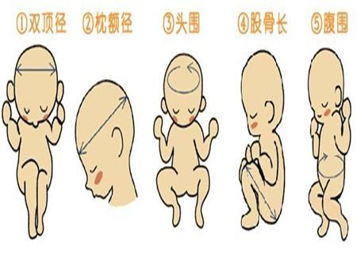

Komidori Li
Komidori Li
胎儿发育预测
- 主页
- 育儿工具
- 胎儿发育预测

这些数据可以查询您的B超单，个人报告结果与以上数据有出入时 ，请不要紧张。因为胎儿的体位不同，医生操作差异等，均会引起数据误差，可向专业医生咨询
温馨提示
双顶径并不是头围，而是位置约靠近太阳穴，骨头两侧顶骨径的长度;腹围要测量胎儿肝脏及胃部所在同一平面的腹围;而大腿骨在超声波上看来，形状则像小狗爱吃的骨头，准妈妈们可以通过超声波的显示画面仔细观察。
有些医师也会测量妈妈的腹围：以横向的方式测量腹部最高的部位，但是因为每位准妈咪的腹围差异大，因此，比较建议准妈咪在家定期自我测量即可。
准妈咪以仰卧的姿势，让医师利用量尺来测量准妈咪子宫底(靠近准妈咪胸骨下方的位置)到耻骨联合上缘的长度，藉以推估胎儿的成长情况，在怀孕达20周以上时，妊娠周数通常会与此距离相当。